8. 色适应
第六章探讨了各种色貌现象，这些现象表明简单的三刺激值色度学无法充分解释色貌。这些现象大多可以视为二阶效应 (second-order effects)，而本章讨论的色适应 (chromatic adaptation)则是最重要的一阶色貌现象 (first-order color appearance phenomenon)。
三刺激值色度学告诉我们，在相同的观察条件下，两个刺激物对于标准观察者来说是否匹配。有趣的是，只要观察条件的变化不影响两个刺激物的光谱分布，无论观察条件如何变化（只要这些变化不影响光谱分布），视觉匹配 (visual matches)都会保持一致。
译者注：这里的“视觉匹配”是指两个颜色在物理上（三刺激值）一致的情况下，观察者在相同的光照条件下会感知到它们的颜色是相同的。这种物理上的匹配是由三刺激值色度学决定的。
然而，尽管匹配保持不变，两个刺激物的色貌 (color appearance)可能会发生显著变化。色适应变化就是一个例子：匹配保持不变，但色貌发生变化。要构建色貌模型 (color appearance model)，必须理解这种色貌变化。
译者注：虽然在物理上两个颜色的三刺激值没有变化，但当环境光照条件变化时，人眼对颜色的感知可能会不同。这就是色貌变化的一个典型例子。
举例：假设你在日光下看到两块颜色相同的布料，它们的三刺激值匹配。当你换成白炽灯光源时，虽然它们的物理特性（三刺激值）没有变，但由于光源不同，它们的颜色看起来可能有差异。
色适应 (chromatic adaptation)指的是人类视觉系统在不同光照条件下调整自身以维持物体颜色大致不变的能力。一个很好的例子是反面的情况：摄影胶片缺乏色适应能力。传统的透明胶片 (transparency film)一般是为日光拍摄设计的，如果在白炽灯下拍摄，则会产生明显的黄橙色偏差，因为胶片无法像人类视觉系统那样调整红、绿、蓝感光层的相对响应。然而，人类在日光和白炽灯下感知到的物体颜色变化很小。
译者注：色适应是人类视觉系统自动调节的一种能力，使我们在不同光照下仍然感知到物体的“真实”颜色。比如在白炽灯下，尽管光源偏黄，我们仍然可以感知到物体的大致颜色不变。这种能力让我们可以在各种光照条件下感知颜色的一致性。
本章回顾了色适应的一些基本概念。与色适应相关的问题在现代历史的大部分时间里都得到了研究。亚里士多德（Wandell 1995: 65）甚至也讨论过这个话题：
在编织和刺绣的物品中，颜色的外观会因其相互并列而受到极大影响（例如，紫色在白色和黑色羊毛上的表现是不同的），
也会受到照明差异的影响。因此，刺绣工人说，他们在灯光下工作时常常会弄错颜色，使用了错误的颜色。
——亚里士多德，《气象学》
译者注：亚里士多德描述了早期的色适应现象。他指出，在不同背景和照明条件下，颜色会呈现不同的外观。这正是色适应的核心：在不同的光照条件下，人眼对颜色的感知会发生变化。
关于色适应还有许多优秀的讨论，可以在书籍（Barlow and Mollon 1982, Spillman and Werner 1990, Wandell 1995, Wyszecki and Stiles 1982）和期刊（Bartleson 1978, Hunt 1976, Lennie and D'Zmura 1988, Terstiege 1972, Wright 1981）中找到。鼓励感兴趣的读者探索这些精彩的文献。
参考文献
- Wandell, B. A. (1995). Foundations of Vision. Sinauer Associates.
- Barlow, H. B., & Mollon, J. D. (1982). The Senses. Cambridge University Press.
- Spillmann, L., & Werner, J. S. (1990). Visual Perception: The Neurophysiological Foundations. Academic Press.
- Wyszecki, G., & Stiles, W. S. (1982). Color Science: Concepts and Methods, Quantitative Data and Formulae. Wiley.
- Bartleson, C. J. (1978). Comparison of chromatic-adaptation transforms. Color Research & Application, 3(3), 129-136.
- Hunt, R. W. G. (1976). The Reproduction of Colour. Fountain Press.
- Lennie, P., & D'Zmura, M. (1988). Mechanisms of color vision. Critical Reviews in Neurobiology, 3(4), 333-400.
- Terstiege, H. (1972). Chromatic adaptation: A state-of-the-art report. Journal of Color and Appearance, 1(4), 19-23.
- Wright, W. D. (1981). Why and how chromatic adaptation has been studied. Color Research & Application, 6(3), 147-152.
8.1 明适应, 暗适应, 和色适应
适应（Adaptation）是指的生物体，能够针对刺激而改变自身的敏感程度的一种能力。广义的概念适用于所有感知领域。各种适应机制可以在很短时间内（毫秒级别）起作用，也可以在很长时间（周，月或者年！）。通常来说，适应的机制会让观察者随着物理刺激的增加感受到较少的刺激，比如，一个人可能会在宁静的夜晚敏锐的感受到钟表的滴答声，但是在鸡尾酒会上却感受不到。在视觉领域，有三种适应最为重要：明适应，暗适应和色适应。
明适应
明适应是指当环境光照水平增加时，视觉敏感度的下降。比如，在晴朗的夜晚很容易看到数百万颗星星，尽管在白天，天空中的星星数量和种类与夜晚相同，但我们却看不到。这是因为白天天空的总亮度比夜晚高出好几个数量级，导致白天对亮度变化的视觉敏感度降低。因此，夜晚能让我们看到数百万颗星星的亮度变化，在白天已不足以让我们察觉到它们。再比如，想象一下半夜醒来，打开房间里的明亮灯光。起初你的视觉系统会被强光刺痛，几乎看不到任何东西，甚至可能会感到一些不适。
几十秒后，你开始能够正常地看清被灯光照亮的物体。发生这种现象的原因是，视觉系统在黑暗中处于最敏感的状态，当灯光刚打开时，由于敏感度过高，视觉系统暂时过载。但经过短时间的适应后，视觉系统的敏感度下降，逐渐适应了光线，从而恢复正常的视觉。
暗适应
暗适应与明适应类似，但方向相反。暗适应是指当亮度水平降低时，视觉敏感度增加。虽然明适应和暗适应的现象相似，但由于它们通过不同的机制进行调节并表现出不同的视觉效果，因此有必要将二者区分开来。比如，明适应发生得比暗适应快得多（Kalloniatis 和 Luu，2012）。一个典型的暗适应现象是，当人们从明亮的户外进入黑暗的电影院时，起初影院显得非常黑暗，人们通常会立即停止走动，因为他们看不清任何东西。然而，经过短时间后，房间里的物体（座椅、其他人等）开始变得可见，再过几分钟，物体变得清晰可见，人们可以轻松识别其他人或找到更好的座位。这一过程是因为暗适应机制逐渐提高了视觉系统的整体敏感度。
在视觉系统中，明适应和暗适应的过程可以类比为相机的自动曝光控制。
色适应
明适应和暗适应过程确实会对刺激物的色貌产生深远的影响，因此它们被纳入了各种色貌模型中。然而，第三种更为重要的视觉适应——色适应，必须包含在所有的色貌模型中。色适应指的是色觉机制中独立的敏感度调节。通常，色适应仅指三种视锥细胞独立的响应性变化（而明适应和暗适应则指所有感光细胞的整体响应性变化）。然而，重要的是要记住，色觉还有其他机制（例如对抗机制，甚至在物体识别层面），它们的敏感度变化也可以被视为色适应的机制。
举例来说，考虑一张在日光下照亮的白纸。当将这张白纸移到一个白炽灯照明的房间时，尽管从纸上反射的光能量已经从以蓝色为主转变为以黄色为主，但它看起来仍然是白色的（这就是本章介绍中提到的透明胶片无法适应的光照变化）。图8.1展示了这种光照变化。图8.1(a)显示了在日光照射下的典型场景，图8.1(b)展示了在不能进行色适应的视觉系统下，白炽灯照射下的场景样貌，而图8.1(c)则展示了一个能够像人类视觉系统那样进行色适应的视觉系统在白炽灯照射下看到的同一场景。
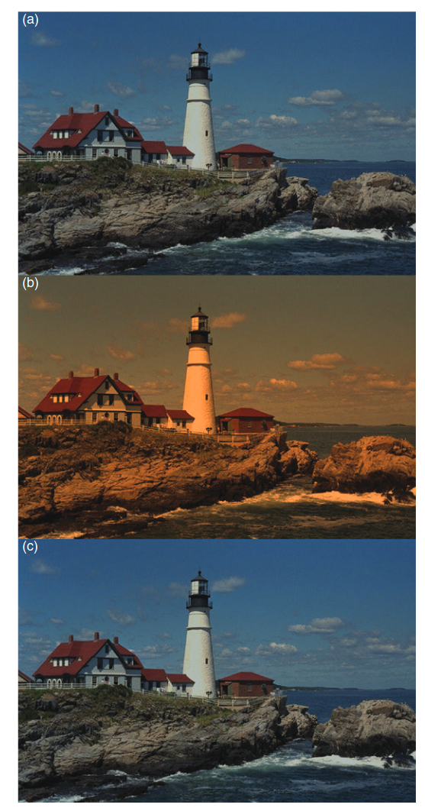
图 8.1 (a) 日光照明下的场景，(b) 无法进行色适应的视觉系统感知到的钨光照明下的相同场景，以及 (c) 具有典型 von Kries 色适应（类似于人类视觉系统）的视觉系统感知到的钨光照明下的场景。灯塔原始图像来自 Kodak Photo Sampler PhotoCD。
负后像
负后像（残像）现象提供了另一个色适应的例子。通过注视图8.2可以观察到这种现象。首先注视图8.2中央的黑点，并记住不同颜色的位置。大约30秒后，将视线转移到一个明亮的白色区域，如一面墙或一张白纸。此时你会注意到各种颜色的残像及其位置。这些残像是由于色觉机制中独立的敏感度变化造成的。举例来说，图8.2中红色区域所对应的视网膜部分在适应过程中对红色的敏感度降低，因此在看白色背景时，出现了红色的补色——青色残像。类似的解释也适用于残像中观察到的其他颜色。
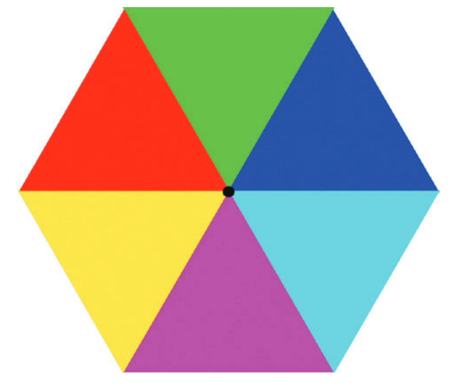
图 8.2 一个由局部视网膜适应产生的负后像示例。凝视彩色图案中的黑点大约30秒，然后将目光移到一个均匀的白色区域。观察负后像的颜色与原始图案颜色的对比。
明适应可以类比为相机的自动曝光控制，而色适应则类似于视频摄像机或数码相机中的自动白平衡功能。
8.2 生理机制
虽然各种适应现象本身就非常有趣，但为了正确地建模这些现象，理解适应的生理机制是必要的。适应机制种类繁多，从严格的感知反射反应到纯粹的认知反应。这些机制尚未完全被理解，但研究它们的多样性有助于理解它们如何被纳入各种模型中。本文讨论的适应机制包括：
- 瞳孔扩张/收缩
- 杆细胞–锥细胞转换
- 感受器增益控制
- 减法机制
- 高级适应
瞳孔扩张/收缩
最明显的光适应和暗适应机制是瞳孔的扩张和收缩。在普通的观察环境中，瞳孔直径通常在3到7毫米之间变化（在极端情况下为2-8毫米）。这代表了瞳孔面积大约5倍的变化。因此，瞳孔大小的变化可以解释光线适应和暗适应在大约5倍亮度范围内的变化。虽然这看起来很显著，但人类视觉系统能够舒适操作的亮度范围至少跨越10个数量级。显然，虽然瞳孔提供了一种适应机制，但它不足以解释观察到的视觉能力。因此，视网膜及其后的生理机制中一定还嵌入了其他的适应机制。
视杆和视锥细胞的作用
人类视网膜中有两类光感受器：视杆细胞和视锥细胞。视锥细胞对光照较不敏感，主要在较高光照条件下工作，而视杆细胞更加敏感，主要在较低光照条件下工作。因此，从视锥细胞视觉转变为视杆细胞视觉（大约发生在0.1–1.0 cd/m²的亮度下）为光适应和暗适应提供了额外的机制。
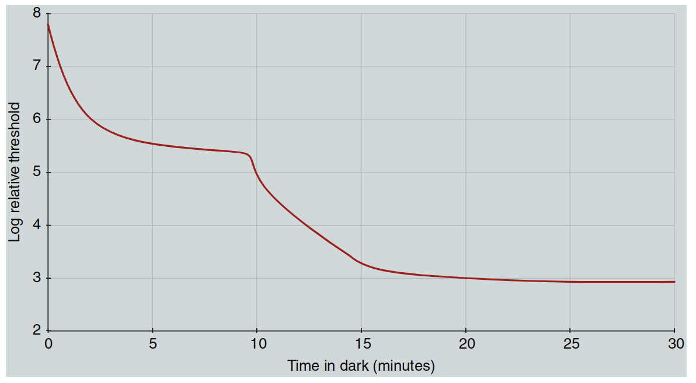
图8.3 典型的暗适应曲线，展示了在强光照后阈值的恢复过程。
当暴露在增加的亮度下时，视锥细胞的响应性迅速降低（光适应），这个过程最多只需几分钟。而当暴露在减少的亮度下时，视杆细胞敏感度的增加需要更多时间。这可以通过经典的暗适应曲线来说明，该曲线展示了在暴露于极亮的适应刺激后阈值的恢复，如图8.3所示。曲线的第一个阶段展示了视锥细胞敏感度的恢复，几分钟后趋于平稳。大约10分钟后，视杆细胞的敏感度恢复到超过视锥细胞的水平，曲线再次下降。大约20分钟后，视杆细胞达到了最大敏感度，暗适应曲线趋于平稳。这条曲线解释了人在进入黑暗的电影院后随时间产生的视觉感知变化。
除了提供光适应和暗适应机制，视杆-视锥转变对颜色感知有着深远的影响。请记住，颜色视觉依赖于三类视锥细胞，而视杆细胞只有一种类型。因此，当亮度降低到仅视杆细胞活跃的水平时，人类基本上变得色盲，只能看到灰色的世界。因此，视杆-视锥转变在颜色外貌和色彩适应模型中兴趣有限，必须考虑其他机制。（注意：在低亮度下，视杆细胞对颜色外貌的影响是重要的，它已被整合到Hunt的颜色外貌模型中。）
感受器增益控制
或许色适应最重要的机制是视网膜感受器独立的敏感度变化，这有时称为感受器增益控制（receptor gain control）。可以设想一种增益控制，它调节入射到光感受器上的光子数量与该感受器生成的电化学信号之间的关系。色觉适应通过在光子数量多时降低增益（特定视锥细胞类型的高激发水平）来响应，而当光子较少时则提高增益。色觉适应的关键在于这些增益控制在三种视锥细胞中是独立的（虽然增益控制也是明适应的机制，但明适应可以通过对所有三种视锥细胞的单一增益控制来实现，而色觉适应则需要独立的调节机制）。在生理上，光感受器增益的变化可以通过高亮度下色素消耗来解释。光线会分解视觉色素分子（这是光转导的一部分），从而减少可用于产生视觉反应的分子数量。因此，在高强度刺激下，光色素的减少使得光感受器的响应性降低。
虽然色素消耗提供了合理的解释，但有证据表明，视觉系统在低亮度下也会以类似方式适应，而此时色素消耗非常少。这种适应被认为是在视网膜的水平细胞、双极细胞和神经节细胞层面的增益控制机制所致。感受器之外的视网膜细胞的增益控制有助于解释色觉适应的某些空间低通特性。Delahunt 和 Brainard（2000）也讨论了不同视锥细胞类型在色觉适应控制中的相互作用。最近的研究表明，视网膜神经节细胞（ipRGCs）通过黑视蛋白吸收在视网膜敏感度控制和适应过程中可能起到了重要作用，这种额外的视网膜光敏感元件可能解释了一些仅基于视锥细胞响应的适应模型的局限性。
减法机制
除了增益控制机制外，关于色觉适应还有心理物理学证据表明存在减法机制（subtractive mechanisms）（Shevell 1978, Walraven 1976）。从生理学角度来看，可以通过研究视锥细胞的时间脉冲响应来找到这种减法适应的机制。视锥细胞的时间脉冲响应是双相的，能够增强瞬时信号并抑制稳定信号。类似的过程也出现在视网膜的侧抑制机制中，它产生空间对抗性的脉冲响应，增强空间瞬变并抑制空间上均匀的刺激。
生理学上的适应模型需要同时具备乘法（增益）和减法机制（Hayhoe等人，1987，1989），这与颜色视觉领域通常提出的仅包含增益控制的模型（见第9章）完全兼容，只需假设减法机制发生在压缩的非线性过程之后。如果这种非线性过程被认为是对数函数，那么在对数变换后进行的减法变化与非线性之前的乘法变化是相同的。这种数学处理使阈值心理物理学、生理学和色貌模型的结果保持一致，也强调了压缩非线性作为适应机制的重要性。
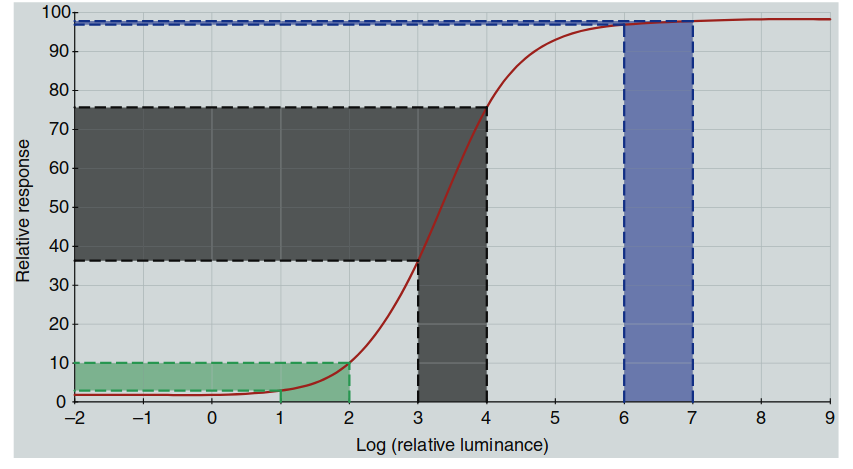
图8.4 展示了人类视觉系统的一个典型响应曲线，这个图帮助我们理解在极低和极高输入信号下的响应压缩现象。也就是说，当光的亮度非常低或非常高时，视觉系统的响应会趋于稳定，不再显著增加或减少。这种机制有助于我们在极端亮度条件下保持视觉系统的效率，而不会被过多的信号变化干扰。
图8.4展示了人类视觉系统（或任何成像系统）的典型非线性响应函数。该函数表现出一个阈值水平，低于此阈值时响应保持不变；在达到饱和水平后，响应同样保持不变。图中展示了三个10:1比率的输入组，适应光照水平不同。从图8.4中可以看到，10:1的输入刺激范围在低和高适应光照水平下产生的输出范围较小，而在中等适应水平下产生的输出范围较大。低水平下响应的减少与机制灵敏度的基本限制有关，而高水平下响应的压缩可以被视为适应的一种形式（随着输入信号的增加，响应性降低）。这种如图8.4所示的非线性响应函数在色貌模型中是必要的，用于预测诸如Stevens效应和Hunt效应（详见第6章）等现象。
译者注：
这种视觉系统的设计实际上是一种智能编码策略。人类的视觉系统在亮度范围极大时，使用了非线性的响应方式，在最重要的中等亮度范围内高度敏感，而在极端亮度下则压缩处理。这种机制可以用有限的“存储”或“计算资源”来处理大范围的信息。
从信息论的角度看，视觉系统通过压缩响应（高效编码）来优化信息处理，在我们最常遇到的亮度条件下充分利用资源，而在极端条件下则避免浪费资源。这种压缩机制类似于现代计算机系统中的数据压缩，帮助我们在不同亮度范围内获取最大的信息量。
- 在 tone mapping 中，图像处理的目标是通过适当的压缩方式，在不丢失关键细节的前提下，合理分配有限的亮度空间。这与我们视觉系统的智能编码机制非常类似——将大部分的计算资源用于中等亮度条件下，以优化我们对常见场景的感知能力，而在极端光照条件下减少响应，从而节约资源。
- Ilya 所说“压缩即智能”，可以在这个视觉机制中得到体现
高级适应机制
到目前为止，讨论的机制主要集中在视觉系统的前端，这些是响应简单刺激配置的低级机制。Webster 和 Mollon（1994）展示了空间对比度、颜色感知与更高级视觉机制之间的关系。视觉系统中还有许多高级适应例子，它们发生在系统的更高级别（即视觉皮层）。这些皮层适应的例子包括：
- McCollough效应
- 空间频率适应
- 运动适应
- 模糊适应
- 噪声适应
- 人脸适应
这些例子展示了其他尚未探讨的高级适应类型的可能性。Barlow 和 Mollon（1982）展示了一个典型的 McCollough 效应实验。为了体验 McCollough 效应，观察者需要间歇性地观看红色和黑色条纹的水平图案，以及绿色和黑色条纹的垂直图案。每个图案观看几秒钟，然后切换到另一个图案，确保不会形成简单的后像。在适应大约四分钟后，观察者再看与适应图案空间频率相似的黑白条纹图案时，会看到垂直方向的黑白图案变为黑色和粉色，水平方向的黑白图案变为黑色和淡绿色。这个效应取决于适应刺激的颜色和方向，无法用简单的后像解释，它表明了视觉系统皮层层次的适应，首次观察到对特定方向和空间频率反应的神经元。这种效应也非常持久，有时会持续几天或更长时间！
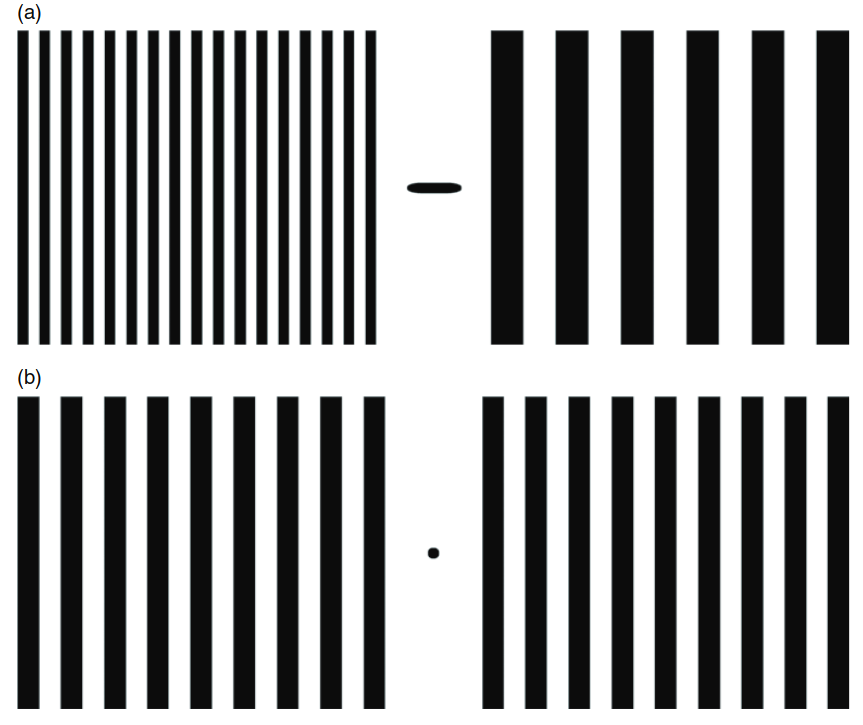
图8.5 刺激配置以展示空间频率适应。在图(a)中注视中央的黑条大约60秒，然后注视图(b)中央的黑点。注意适应期后感知到的图(b)中两个图案的相对空间频率。
Neitz 等人（2002）描述了色觉适应的实验，显示了在几周内色觉适应和观察者白点的长时间重置（或重新校准）。通过观察图8.5可以看到空间频率适应。对图8.5（a）进行适应，注视中心的黑条一到两分钟。为了避免简单的后像，不要只盯着一个点看，而是让你的目光沿着黑条来回移动。适应期结束后，注视图8.5（b）中的黑点。图8.5（b）右侧的图案看起来空间频率比左侧的高。图8.5（b）中的两个图案是相同的。适应图8.5（a）后外观的差异是由于对各种空间频率敏感的机制适应所致。适应高空间频率时，其他图案看起来空间频率较低，反之亦然。再次表明，这种适应归因于选择性响应各种空间频率的皮层细胞。
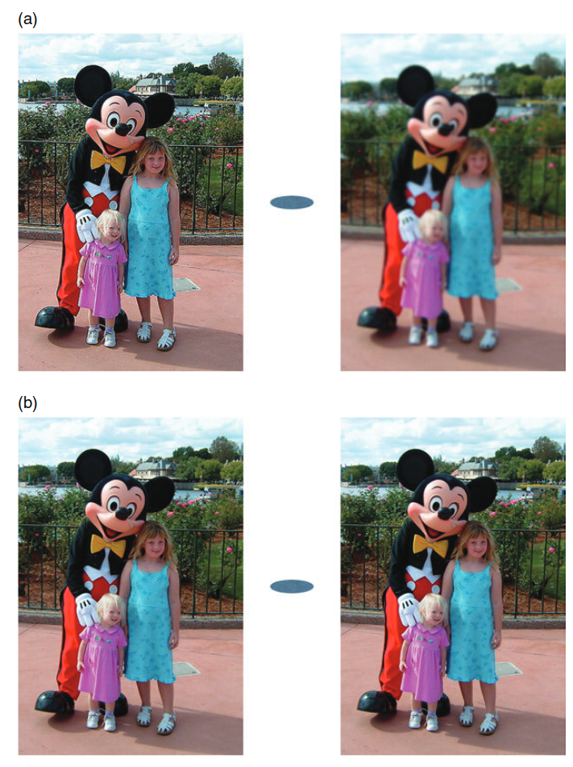
图8.6 模糊适应的演示。在(a)图像之间的椭圆上注视约30秒，然后注视(b)中物理上相同的图像之间的椭圆，注意它们的相对外观。这是空间频率适应的一个更复杂的例子。
模糊适应是一种更复杂的空间频率适应形式，如图8.6所示。图8.6（a）中有两幅图像，左侧的图像被锐化，右侧的图像则模糊了。通过注视它们之间的椭圆进行适应，大约30秒后，将目光转移到图8.6（b）中的两幅图像，并注视它们之间的椭圆。这两幅图像是相同的，但适应上方的锐化图像后，左侧的图像看起来模糊，适应上方的模糊图像后，右侧的图像看起来更加清晰。这再一次生动展示了我们视觉系统中高级适应机制的作用。
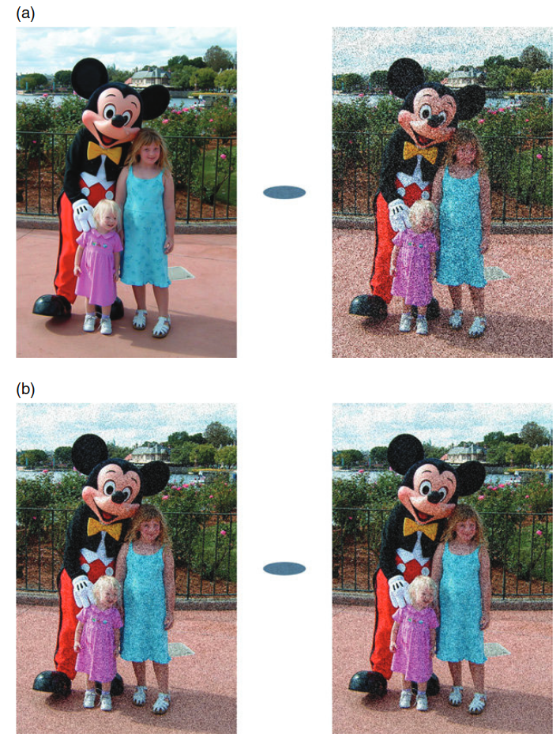
图8.7 噪声适应的演示。在(a)中注视图像之间的椭圆约30秒，然后注视(b)中相同图像之间的椭圆，注意它们的相对外观。这是一个非常复杂的空间频率适应例子。
更深层次，人类也会对图像中的噪声进行适应（Fairchild 和 Johnson，2005，2007）。图8.7与图8.6类似，不同之处在于适应刺激，图8.7(a)中加入了不同水平的噪声。经过大约30秒的适应后，当观察图8.7(b)中的相同图像（具有中等噪声水平）时，可以看到，适应较高水平噪声会抑制噪声感知，而适应较低噪声水平的刺激则会增强噪声感知。这种适应的复杂性在于它无法用简单的空间频率适应来解释，因为噪声图案是由白噪声（所有频率都有能量）构成的。有趣的是，这种适应让观察者更难察觉到影像系统中恒定来源的伪影。
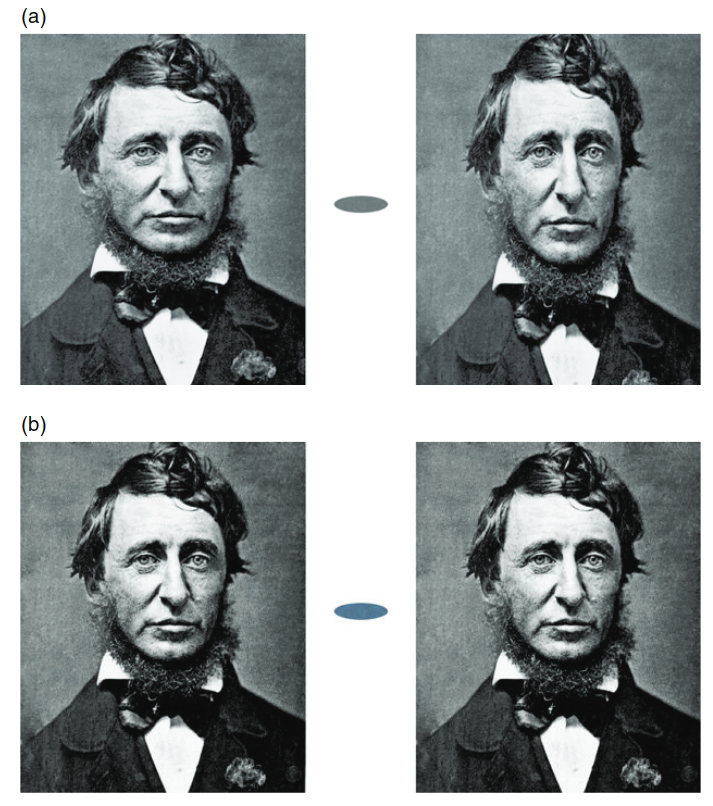
图8.8 面部形状适应的演示。在(a)中的面孔之间的椭圆上注视约30秒，然后注视(b)中相同面孔之间的椭圆，注意它们的相对外观。这是一个高级适应效应，作用于对面部外观成分敏感的机制。
Webster（2011）研究了对多种复杂刺激的视觉适应。例如，他展示了人类观察者如何适应面部的某些特征（如眼睛间距、长度宽度比、发际线、鼻子大小、笑容等），并且这些适应的后效应可以在面部图像中体现出来。例如，如果适应了一张带大笑的面孔，然后看一张中性表情的面孔，你可能会看到一点皱眉。这类结果表明，在视觉系统中有适应机制作用于非常高级的处理过程。图8.8展示了面部适应的一个非常简单的例子。图8.8(a)中有两张面孔，一张被扭曲得胖而矮，另一张被扭曲得高而瘦。在注视它们之间的椭圆约30秒后，将视线转移到图8.8(b)中相同的两张面孔之间的椭圆，注意哪个面孔显得更胖。
运动适应在时间域内提供了类似的证据。当你在看电影的字幕滚动（或电脑终端上的文本滚动）几分钟后，字幕停止时，静止的文字可能会看起来向下移动。这是因为在观看滚动字幕时，选择向上运动的皮层机制已经适应。一旦运动停止，向上和向下选择性机制的响应应该相互抵消，但已经适应（即疲劳）的向上机制响应不如预期强烈，静止的文本看起来像在向下移动。在高速公路上长时间开车后也可以观察到运动适应现象。视觉系统适应了朝向观察者的运动，当汽车停下时，有时会感觉外部世界正在远离观察者，尽管实际上没有运动。
上述皮层适应的例子引出了下一个逻辑步骤。如果在视觉系统中有如此高级别的适应机制，是否也可能存在需要我们知识和对场景解释的认知适应机制？这个问题将在8.3节讨论。
8.3 感知机制和认知机制
我们可能会倾向于认为色觉适应是一种感知机制，是对刺激配置变化的某种自动反应。然而，有明确的证据表明，色觉适应的某些机制依赖于对物体及其光照环境的认知（Fairchild, 1992a,b, 1993a）。这些是认知适应机制。
色觉适应机制可以分为两类：
- 感知机制 – 对刺激能量自动做出反应。
- 认知机制 – 基于观察者对场景内容的知识做出反应。
感知机制
感知色觉适应机制在视觉和颜色科学文献中被广泛研究和讨论。前面提到的这些机制的生理位置通常被认为是光感受器和视觉系统早期阶段的神经元的敏感度控制。大多数现代感知色觉适应的理论和模型可以追溯到冯·克里斯（von Kries，1902年）的工作，他写道：
“... 视觉器官中的各个成分彼此完全独立，每一个成分都根据其自身的功能独立疲劳或适应” （MacAdam 1970年翻译: 118）。
虽然我们今天知道冯·克里斯的这些话并不完全正确，但这个概念是准确的，并提供了有用的见解。直到今天，色觉适应通过视锥信号归一化来实现的想法仍被称为冯·克里斯系数定律（von Kries coefficient law），并作为所有现代色觉适应和颜色外观模型的基础。
认知机制
认知机制在文献中也早已得到认可。然而，或许因为量化认知效应的难度，这些机制通常只是简要提及，且并不广为人知或被深入理解。为了更好地理解认知色觉适应机制的概念，引用一些在过去两个世纪中提到它们的研究者的观点可能是最好的方式。
赫尔姆霍茨（Helmholtz，1866）在他的生理光学论著中讨论了物体颜色外观：
“我们学会判断在白光下物体的外观，并且由于我们的兴趣完全在于物体的颜色，我们逐渐对这种判断所依赖的感知变得无意识。”（Woodworth 1938年翻译）
赫林（Hering，1920），因提出对立颜色理论而闻名，他讨论了“记忆颜色”的概念：
“所有我们已经通过经验认识的物体，或因为颜色而认为熟悉的物体，我们都是通过记忆颜色来看它们的。”（Hurvich 和 Jameson 1964年翻译：89）
贾德（Judd，1940：2），在颜色科学领域做出了无数贡献，他提到了两种色觉适应机制：
“观察者适应光源或忽略非日光光源大部分影响的过程是复杂的；它们部分是视网膜层面的，部分是皮层层面的。”
最后，埃文斯（Evans，1943：596），他在许多关于彩色摄影和色彩感知的讲座和著作中讨论了为什么照片中的颜色看起来令人接受：
“在日常生活中，我们习惯于认为大多数颜色并没有变化。这在很大程度上是因为我们倾向于记忆颜色，而不是仔细观察它们。”
Jameson 和 Hurvich（1989）讨论了拥有多个色觉适应机制的价值，这些机制能够提供关于天气、光线、时间变化和场景中物体恒定物理特性的重要信息。
最后，Davidoff（1991）出版了一本关于颜色和物体识别认知方面的专著，Purves 和 Lotto（2003）提出了一种依赖认知机制的经验视觉理论。
硬拷贝与软拷贝输出
虽然色觉适应非常复杂，依赖于感知和认知机制，但在查看图像显示时区分这两种机制的重要性还不太清楚。如果图像在与原件相同的介质中进行再现，并且在相似的条件下观看，可以认为观看原件和再现件时的色觉适应机制是相同的。然而，当原件出现在一种介质中（如软拷贝显示），而再现件出现在另一种介质中（如硬拷贝输出）时会发生什么呢？一系列实验（Fairchild 1992b, 1993a）量化了色觉适应机制的一些特性，表明在查看软拷贝显示时，所激活的色觉适应机制与查看硬拷贝或原始场景时激活的机制并不相同。
当查看硬拷贝图像时，图像被感知为一个被周围光线照亮的物体。因此，感知机制（响应于刺激的光谱能量分布）和认知机制（忽略“已知”的光源颜色）都处于活跃状态。而当查看软拷贝显示时，它不能轻易被解释为一个被照亮的物体。因此，没有“已知”的光源颜色，只有感知机制起作用。
这可以通过对比在白炽灯照明下的白纸和在黑暗房间中观看一个自发光的显示屏来证明。白纸会看起来是白色或略带黄色，而显示屏会显得是高彩度的黄橙色。事实上，白纸在这种显示屏照亮下仍然会显得白色，而显示屏本身保持偏黄色的外观！像 RLAB、Hunt 模型和 CIECAM02 这样的颜色外观模型包括了对这里描述的“忽略光源”的认知机制的不同程度的处理。
适应的时间进程

图8.9 Fairchild 和 Reniff（1995）测量的色觉适应时间进程，条件是在无亮度变化的情况下。
色觉适应机制的另一个重要特征是它的时间进程。Fairchild 和 Lennie（1992），Fairchild 和 Reniff（1995）详细探讨了色觉适应在颜色外观判断中的时间进程。这些研究结果表明，在恒定亮度下，色觉适应的感知机制在色度变化后约60秒内完成90%。Fairchild 和 Reniff（1995）的结果如图8.9所示，展示了在适应刺激的色度变化后，适应程度随时间的函数关系。60秒可以被认为是观察者在进行关键判断之前适应特定观看环境的最小时长。
当涉及到显著的亮度变化时，适应会稍慢一些（Hunt 1950）。至于亮度适应（明适应和暗适应），假设这两者可以用指数衰减函数建模是合理的。明适应的时间常数约为5-10秒，而锥细胞的暗适应时间常数约为2-3分钟（视杆细胞约为10分钟）。请记住，时间常数会依赖于刺激的细节，如大小、亮度水平和视网膜位置（Kalloniatis 和 Luu 2012）。
认知适应机制依赖于对刺激配置的知识和解释。因此，一旦获取这些知识，可以认为它是瞬时完成的。然而，在一些不寻常的观看情况下，解释场景所需的时间可能相当长，甚至无法确定。
Ferwerda 等人（1996）和 Pattanaik 等人（2000）展示了基于视觉感知和适应变化来修改图像外观的数学模型。
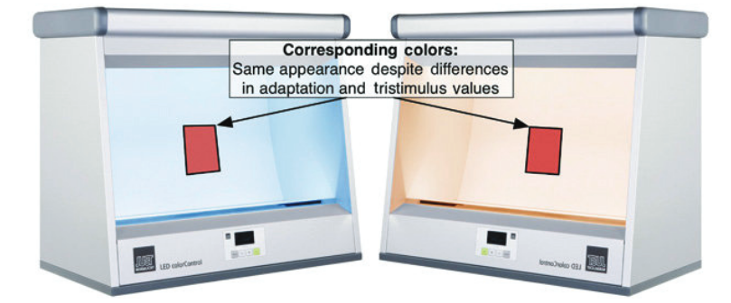
图8.10 对应颜色实验的示意图。在一种观察条件下的刺激物（左）与在第二种观察条件下的刺激物（右）外观相匹配，但由于观察环境的变化，它们通常会有不同的三刺激值。
8.4 对应颜色数据
关于色适应的最广泛可用的视觉数据是对应颜色数据。对应颜色被定义为在不同观看条件下，颜色外观相匹配的两个刺激，如图8.10所示。 关于色适应的最广泛可用的视觉数据是对应颜色数据。对应颜色是指在不同观看条件下，颜色外观相匹配的两个刺激。这种情况在图 8.10 中有形象展示。
例如，假设在某组观看条件下，一个由三刺激值 \((X_1, Y_1, Z_1)\) 表示的刺激，看起来与另一组观看条件下的另一个刺激（由三刺激值 \((X_2, Y_2, Z_2)\) 表示）相同。两组刺激及其相应的观看条件构成一对对应颜色。然而，通常情况下，\((X_1, Y_1, Z_1)\) 和 \((X_2, Y_2, Z_2)\) 在数值上并不会完全相同。
对应颜色数据的获取基于多种实验技术。Wright (1981a) 对色适应的历史性回顾详细介绍了这一领域为何及如何被研究的背景。以下是对部分技术及相关研究的简要数学描述:
其中，\((X_1, Y_1, Z_1)\) 和 \((X_2, Y_2, Z_2)\) 表示刺激的三刺激值，而不同的观看条件通过色适应机制引起对颜色的感知差异。
不对称匹配
由于对应颜色数据的收集需要在不同的观察条件下进行视觉匹配，因此此类实验有时被称为不对称匹配实验。理想情况下，颜色匹配是通过直接并排比较两个刺激物来进行的。然而，在两种不同的观察条件下，这在技术上是不可能实现的，除非做出一些简化的假设。也许最令人着迷的例子是MacAdam（1961）报告的一个实验，使用了差异性视网膜适应。在这个实验中，视网膜的两个不同区域（左右两半）暴露于不同的适应刺激中，然后在视野的两半区域呈现测试和匹配刺激进行颜色匹配。这种技术假设视网膜两半的差异性适应与正常观察中的适应相似。然而，这一假设很可能是错误的，因此差异性视网膜适应技术仅具有历史意义。
双眼匹配
下一种实验类型是双眼匹配实验（Haploscopic Matching），其中一只眼睛适应一种观察条件，另一只眼睛适应第二种观察条件。然后，将在一只眼睛中呈现的测试刺激与在另一只眼睛中呈现的刺激进行比较和匹配。双眼匹配实验要求适应在两只眼睛中独立进行。对于感知机制来说，这一假设可能是有效的，但对于认知机制来说，它显然是无效的。Fairchild等人（1994）描述了双眼匹配实验在色貌研究中的一些优缺点。Hunt（1952）提供了一个使用双眼观察的经典研究实例。Breneman（1987）描述了一种用于双眼匹配的巧妙装置。日本色彩科学协会（CSAJ）（Mori等，1991）完成了一项使用双眼观察物体颜色刺激的大规模研究。
记忆匹配
为了避免视网膜差异性适应或双眼观察的假设，必须放弃精确的直接颜色匹配，换取更真实的观察条件。一种允许更自然观察的技术是记忆匹配（Memory Matching）。在记忆匹配中，观察者在一种观察条件下生成与另一种观察条件下记忆中刺激颜色的匹配。Helson等人（1952）使用了记忆匹配的变体，观察者将Munsell坐标分配给各种颜色刺激。实际上，观察者是在将刺激与标准观察条件下记忆中的Munsell样本进行匹配。Wright（1981a）提出，无彩色记忆匹配（匹配灰色外观）将是一种非常有用的研究色彩适应的技术。这种技术已用于获得各种对应颜色的数据（Fairchild 1990, 1991b, 1992b, 1993a）。
量级估计
另一种允许自然观察的技术是量级估计（Magnitude Estimation）。在量级估计中，观察者为外观的各种属性（如明度、彩度和色调，或亮度、色彩鲜艳度和色调）分配尺度值。这类实验既能提供颜色外观数据，也能获取对应颜色的数据。Luo等人（1991a,b）报告了一系列广泛的量级估计实验，Hunt和Luo（1994）对其进行了总结。
跨媒体比较
Braun等人（1996）发表了一系列旨在比较不同跨媒体图像比较技术的实验。他们得出的结论是，短期记忆匹配技术产生了最可靠的结果。同样值得注意的是，Braun等人（1996）的研究表明，将自发光显示器和反射打印品并排比较时，颜色外观会产生不可预测的结果（或者说，预测的匹配图像在单独查看时是不可接受的）。
在这些实验技术的基础上，我们能从结果中学到什么？图8.11展示了Breneman（1987）研究中的对应颜色数据。圆圈代表了在光源D65适应下的颜色匹配，而三角形则表示在光源A适应下的对应色。根据这些数据，可以合理地假设这些对应颜色对代表了不同观察条件下颜色外观中的亮度-彩度匹配。因为亮度和彩度是判断相关颜色时最直观的外观参数。基于这一假设，对应颜色数据可以用于测试色貌模型，通过该模型在一种观察条件下的值预测另一种条件下的亮度和彩度匹配，并将预测结果与视觉结果进行对比。
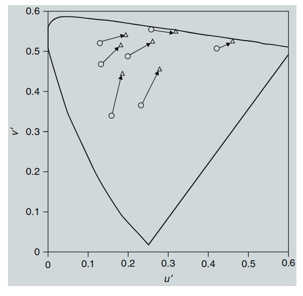
图8.11 展示了从光源D65的色度到光源A的色度变化的色适应对应颜色数据，并绘制在u′v′色度图中。
这种测试也可以通过一种更简单的模型完成，称为色适应转换（Chromatic Adaptation Transform）（或色适应模型）。色适应模型不包括诸如亮度、彩度和色调等外观属性的对应关系。相反，色适应模型仅提供了从一种观察条件下的三刺激值到另一种观察条件下匹配的三刺激值的转换，或者转换为某个预定义的参考观察条件。
8.5 色适应模型
如8.4节所述，色适应模型可以用于预测对应颜色数据。这些模型的通用形式可以表示为一组方程，用以描述在色适应过程中的信号转换。以下是基本公式：
其中：
-
\(L\), \(M\), \(S\) 表示原始刺激的长、中、短波长敏感信号；
-
\(L_{white}\), \(M_{white}\), \(S_{white}\) 表示白点条件下的长、中、短波长敏感信号；
-
函数 \(f\) 则表示色适应过程的计算关系。
色适应转换的实现
通过将一种观察条件下的正向模型与另一种观察条件下的逆向模型结合，可以实现色适应转换。这种转换通常以 CIE XYZ 三刺激值的形式表示。转换公式如下：
其中：
-
\(XYZ_1\) 和 \(XYZ_2\) 分别是第一组和第二组观察条件下的三刺激值；
-
\(XYZ_{white1}\) 和 \(XYZ_{white2}\) 分别是两种观察条件下的白点三刺激值；
-
函数 \(f\) 用于描述两种观察条件之间的转换关系。
为了准确模拟色适应的生理机制，必须将刺激物以视锥细胞激发信号（LMS）来表示，而不是CIE三刺激值（XYZ）。幸运的是，视锥细胞激发信号（有时称为视锥基本值）可以通过CIE三刺激值的线性变换（3×3矩阵）进行近似。因此，通用的色适应转换可以如图8.12的流程图中所述。
整个过程如下：
-
从第一种观察条件的CIE三刺激值 \(X_1Y_1Z_1\) 开始。
-
将它们转换为视锥细胞激发信号 \(L_1M_1S_1\)。
-
使用色适应模型结合第一组观察条件的信息（VC1）预测适应后的视锥信号 \(L_aM_aS_a\)。
-
逆向处理第二组观察条件（VC2）以确定对应颜色的视锥细胞激发信号 \(L_2M_2S_2\)，最终得到CIE三刺激值 \(X_2Y_2Z_2\)。
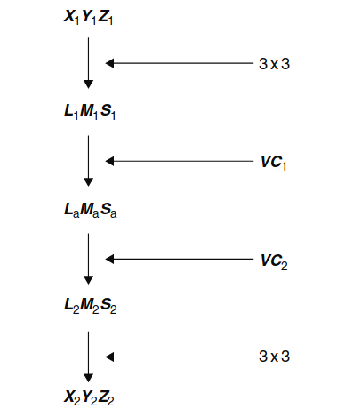
图8.12 展示了应用色适应模型进行对应颜色计算的流程图。这个流程图展示了如何将一种观察条件下的颜色通过色适应模型转换为另一种观察条件下的对应颜色。
具体的色适应模型例子见第9章。CIE（2004c）发布了一份技术报告，回顾了色适应转换的现状。关于现代LMS视锥细胞反应度及其与CIE三刺激值关系的进一步细节，可以参阅Hunt等人（1998）、Logvinenko（1998）、以及Stockman等人（1999, 2000）的研究。
色适应模型能够预测对应颜色，因此可以用于预测观察条件变化时所需的颜色重现。如果这是某一应用的唯一需求，那么色适应模型可能是比完整的色貌模型更简单的替代方案。色适应模型也是所有色貌模型的基础构件。然而，它们有一些缺点，无法预测诸如亮度、彩度和色调等外观属性。而这些属性可能在某些应用中是必要的，如图像编辑和色域映射。在这些情况下，需要更完整的色貌模型。
8.6 色彩不一致性
色适应模型在色彩不一致性指数的计算中既必要又有用。正如第6章所述，物体的颜色在光照变化中通常保持相对恒定，但并非完全不变，且其外观的任何变化都取决于物体的光谱反射特性以及光源的光谱功率分布。
图8.13 一个色彩不一致性指数测量的示意图。该图展示了在一个观察条件下（左侧）的物体与在第二个观察条件下（右侧）的相同物体（但外观不同）之间的颜色差异。如果一个物体具有完美的色彩恒常性（极为罕见），那么它在两种条件下的外观将完全相同，因此其色彩不一致性指数为0。
色彩不一致性的测量类似于简单的颜色差异测量（如\(\Delta E^{*}_{ab}\)），不同的是，在色彩不一致性测量中，两个刺激是在不同的观察条件下观看的，而不是正常情况下的并排观察（图8.13）。可以简单地在每种观察条件下计算样本的CIELAB值，然后计算这些坐标之间的颜色差异。然而，这一过程假设CIELAB是一个完美的颜色外观空间，且具有准确的色适应转换模型，但这两个假设都不成立。
相反，通过使用更精确的色适应转换（例如应用于LMS视锥反应度的von Kries模型或嵌入CIECAM02中的CAT02模型），可以计算两个刺激（即单一物体在两种光源下）的对应颜色，均在一个参考观察条件下（如CIE光源D65）。然后，使用这些对应颜色来计算CIELAB中的颜色差异，无论使用何种色差公式。
因此，一个好的色彩不一致性指数的计算步骤是，首先使用一个好的色适应转换来计算在单一参考观察条件下的对应颜色，然后使用选定的颜色差异公式。
8.7 计算颜色恒常性
还有一个研究领域开发了一些数学模型，有时与色适应模型密切相关。这就是计算色彩恒常性的领域。该方法的目标是利用场景中通常的三色表示，生成物体的色彩恒常估计。本质上，这归结为试图估计仅依赖于物体光谱反射率而不依赖于光照的信号。另一方面，色适应模型旨在预测人类视觉中实际观察到的色彩恒常性失效现象。
可以简单证明，精确的色彩恒常性对于人类视觉系统来说既不可能，也不必要。同色异谱的例子表明，一对物体颜色在不同光源下不可能都保持色彩恒常性，此外实际颜色测量中也需要考虑光源。这表明，追求最色彩恒常的模型并不一定是模拟人类视觉系统的最佳方式。
然而，在机器视觉中，拥有最色彩恒常的传感器可能会带来极大的好处。计算色彩恒常性领域的研究为建模人类表现提供了一些有趣的约束和技术。例如，Maloney和Wandell（1986）的研究表明，三色系统在自然场景中估算表面反射率的精度有其极限。D'Zmura和Lennie（1986）展示了三色视觉系统如何通过牺牲其他维度的恒常性，提供色调维度的色彩恒常响应。Finlayson等人（1994a,b）的研究展示了如何通过推导出最佳的感知光谱响应，利用von Kries系数规则来接近色彩恒常性。
这些研究为构建、实施和测试色貌模型提供了有趣的见解。这些技术还为数字图像采集（如数码相机、计算机视觉系统及其他图像扫描仪）、真实图像合成（如计算机图形学）以及色度测量仪器的设计（如成像色度计）提供了明确的答案。Brill和West（1986）对色适应和色彩恒常性研究的相似性和差异性进行了有用的回顾。Fairchild（2006, 2007a）展示了如何将人类色适应的经验应用于光谱成像系统中，创建一个光谱适应模型。令人惊讶的是，这样的模型在生理学上有一定的合理性，因为人类确实可以获取场景中的光谱信息，只要场景是三维的且包含相互反射。